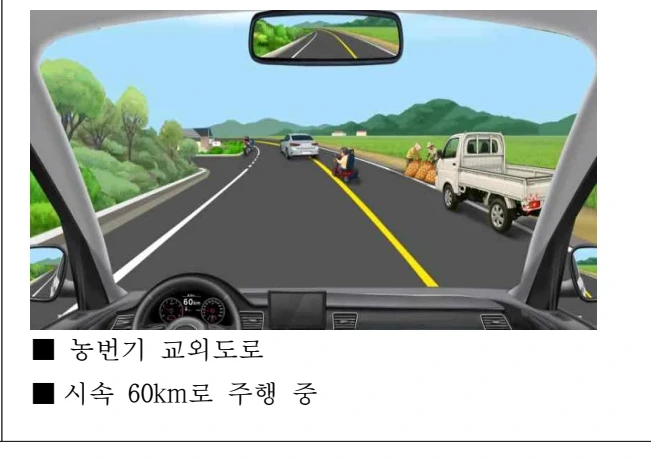

822. Trong các tình huống sau, hai tình huống có khả năng xảy ra tai nạn cao nhất là gì?

- ①Xe ô tô đang chạy phía trước
- ②Xe scooter điện đột ngột quay đầu để rẽ trái
- ③Xe tải chuẩn bị xuất phát từ bên phải
- ④Người đang làm việc bên phải đường
- ⑤Xe hai bánh ở phía trước bên trái
Xem đáp án
Đáp án
② Xe scooter điện đột ngột quay đầu để rẽ trái
③ Xe tải chuẩn bị xuất phát từ bên phải
Căn cứ
Trong mùa canh tác bận rộn, sự di chuyển của máy móc nông nghiệp, xe cộ và người đi bộ trở nên sôi động hơn trên các tuyến đường ngoại ô. Đặc biệt, trên những đoạn đường nối vào lối vào đường nông trại có khả năng cao xảy ra đột nhập hoặc hành vi bất ngờ không tuân thủ luật giao thông nên cần quan sát phía trước và lái xe đề phòng.
Phần căn cứ là bản dịch máy để tham khảo.